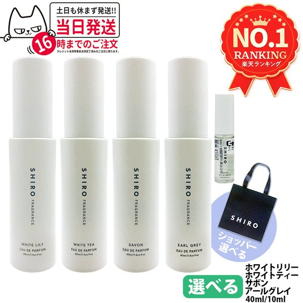
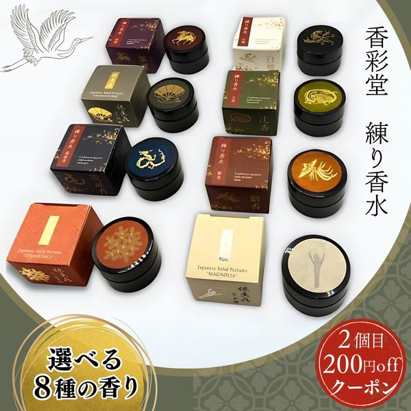
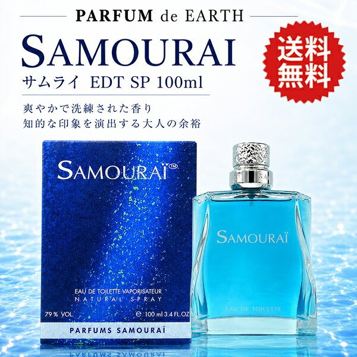
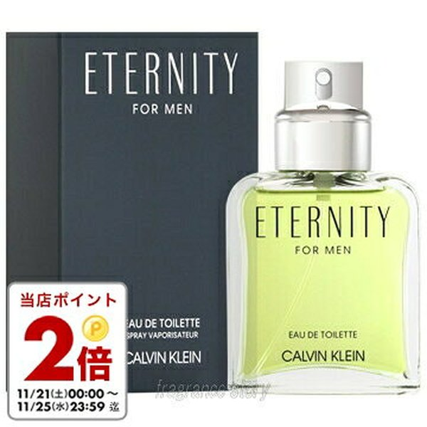
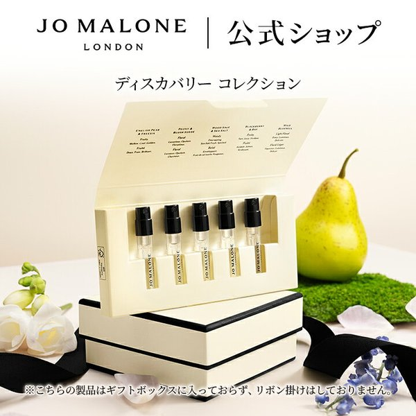
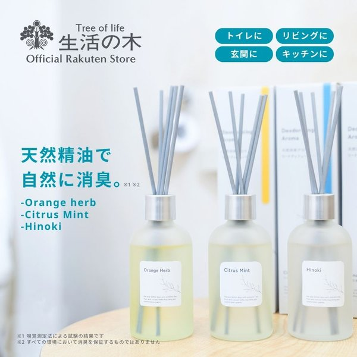
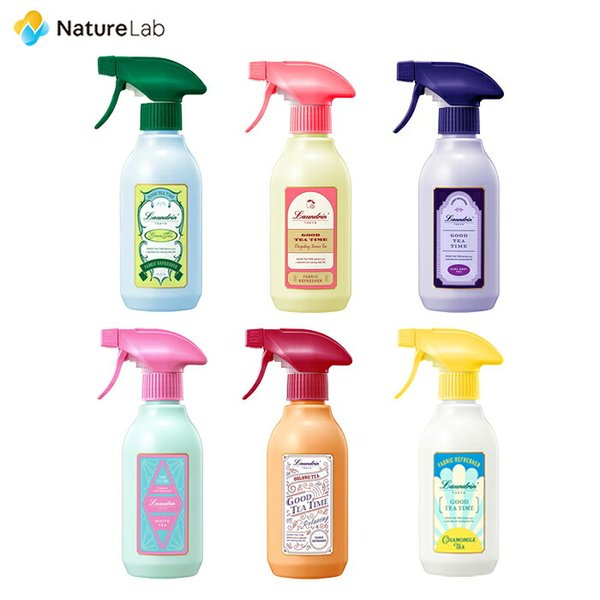
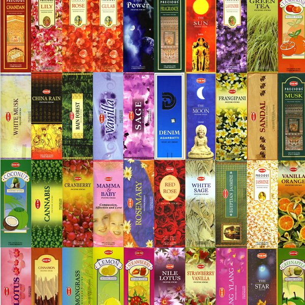
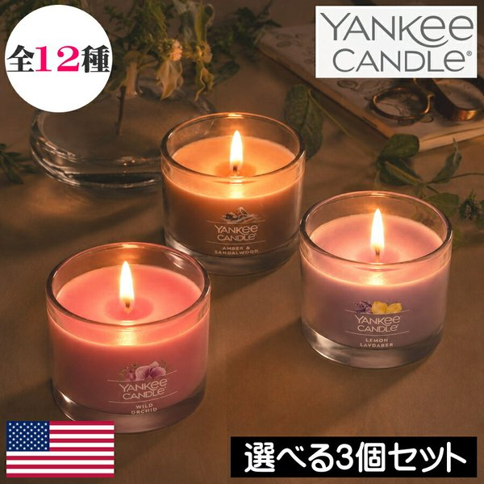

【2026年・フレグランス10選】SHIRO オードパルファン・香彩堂 練り香水・アローム・サムライ EDT・CK エタニティ・ジョー マローン・生活の木 リードディフューザー・ランドリン ファブリックミスト・HEM お香・ヤンキーキャンドルを実売価格で比較
冬は、空気が乾いて香りが立ちやすい季節です。つける香りと部屋の香りを分けて選ぶと、強い香りが重ならず、心地よく過ごせます。
選ぶ軸は3つです。「まずつけるか、漂わせるか」。肌につけるなら香水や練り香水、空間に広げるならリードディフューザーやお香です。「次に香りの強さ」。オードトワレは軽く、練り香水は塗る量で調整できます。「最後に手軽さ」。スプレーは一吹きで済み、お香やキャンドルは火と換気の用意が要ります。なお、レビュー件数が50件に満たない商品は記事内に実数を明記しています。
本記事では、楽天市場で人気・高評価の香水・練り香水・ルームフレグランス10選を、実売価格とレビュー評価つきで写真付き紹介します。
- おすすめ10選 スペック・特徴比較表
- BEST 1｜SHIRO オードパルファン 40ml（10mlも選べる）
- BEST 2｜香彩堂 練り香水（白檀・金木犀ほか8種から選べる）
- BEST 3｜アローム 練り香水 7g（全10種）
- BEST 4｜サムライ EDT スプレー 100ml
- BEST 5｜カルバンクライン CK エタニティ フォーメン 100ml EDT
- BEST 6｜ジョー マローン コロン ディスカバリー コレクション
- BEST 7｜生活の木 天然消臭アロマ リードディフューザー（3種から選べる）
- BEST 8｜ランドリン ファブリックミスト ティーフレグランス
- BEST 9｜HEM お香 7種セット（1箱20本入り×7箱）
- BEST 10｜ヤンキーキャンドル シグネチャータンブラーミニ 3個セット
- 【読者負担0円】買わなくても得する無料サービス
- まとめ：香水・ルームフレグランス10選の選び方
| 順位 | 商品名 | ブランド | 最大の特徴・おすすめ理由 | 総合評価 |
|---|---|---|---|---|
| BEST 1 | SHIRO オードパルファン 40ml（10mlも選べる） | SHIRO | 定番の香りを選べる | 4.62 |
| BEST 2 | 香彩堂 練り香水（白檀・金木犀ほか8種から選べる） | 香彩堂（こうさいどう） | 8種から選べる | 4.62 |
| BEST 3 | アローム 練り香水 7g（全10種） | アローム（arome） | 10種から選べる | 4.33 |
| BEST 4 | サムライ EDT スプレー 100ml | サムライ（SAMOURAI） | 100mlで長く使える | 4.54 |
| BEST 5 | カルバンクライン CK エタニティ フォーメン 100ml EDT | カルバンクライン（Calvin Klein） | 定番のメンズ香水 | 4.60 |
| BEST 6 | ジョー マローン コロン ディスカバリー コレクション | ジョー マローン（JO MALONE LONDON） | 複数の香りを試せる | 4.49 |
| BEST 7 | 生活の木 天然消臭アロマ リードディフューザー（3種から選べる） | 生活の木 | 天然精油を使っている | 4.68 |
| BEST 8 | ランドリン ファブリックミスト ティーフレグランス | ランドリン（LAVONS） | 紅茶系の香りが選べる | 4.66 |
| BEST 9 | HEM お香 7種セット（1箱20本入り×7箱） | HEM | 7種を選べる | 4.79 |
| BEST 10 | ヤンキーキャンドル シグネチャータンブラーミニ 3個セット | ヤンキーキャンドル（YANKEE CANDLE） | 3個から選べる | 4.56 |
SHIRO オードパルファン 40ml（10mlも選べる）

SHIROのオードパルファンは、ホワイトティーやサボンなど定番の香りを瓶に詰めた香水です。40mlと10mlから選べ、大きい瓶を家に、小さい瓶を持ち歩き用に分けられます。肌に直接つけるタイプで、香りは穏やかに続きます。楽天市場での実売価格は約2,155円（2026年11月時点）。
- 定番の香りを選べる
- 40mlと10mlから選べる
- レビュー543件の人気機
- 香りの持ち方は、季節と肌の状態で変わる
香彩堂 練り香水（白檀・金木犀ほか8種から選べる）

京都の香彩堂の練り香水は、白檀や金木犀、麝香などを練り込んだ固形の香水です。指にとって手首や耳の後ろに塗ると、体温で香りが立ちます。8種から選べ、アルコールのツンとした香りが苦手な人でも使いやすいのが特徴です。楽天市場での実売価格は約1,430円（2026年11月時点）。
- 8種から選べる
- アルコール不使用
- レビュー522件の定番
- 指で塗るので、塗りすぎると香りが強くなる
アローム 練り香水 7g（全10種）
アロームの練り香水は、7gの小さな容器に入った固形の香水です。全10種の香りから選べ、アンバーバニラのような甘い香りが中心。バッグに入れておけば、外出先で香りを足せます。手を汚さずに塗れる形状で、会社のデスクにも置いておけます。楽天市場での実売価格は約1,780円（2026年11月時点）。
- 10種から選べる
- 7gで持ち歩ける
- レビュー2,210件の人気機
- 練り香水はスプレーより香りの広がりが控えめ
サムライ EDT スプレー 100ml

サムライは、和のイメージを香水にしたブランドです。このオードトワレは100mlの瓶で、シトラスとスパイスを合わせた香りが中心。オードトワレなので香りは軽く、仕事の日にもつけやすい濃さにまとまっています。楽天市場での実売価格は約3,700円（2026年11月時点）。
- 100mlで長く使える
- 軽めの香りで普段づかいしやすい
- レビュー2,587件の実売モデル
- オードトワレなので、夕方には香りが薄れる
カルバンクライン CK エタニティ フォーメン 100ml EDT

カルバンクラインのエタニティ フォーメンは、清潔感のある香りで長く使われているメンズフレグランスです。ラベンダーと柑橘をベースに、落ち着いた香りにまとまっています。100mlの瓶で、毎日つけても数か月もちます。楽天市場での実売価格は約4,928円（2026年11月時点）。
- 定番のメンズ香水
- 清潔感のある香り
- レビュー1,044件の実売モデル
- よく知られた香りなので、人と重なりやすい
ジョー マローン コロン ディスカバリー コレクション

ジョー マローンのコロン ディスカバリー コレクションは、人気の香りを小さいサイズで試せるセットです。イングリッシュ ペアー & フリージアなどの香りが入り、自分に合う1本を探すのに向いています。化粧箱入りで、贈り物にも使えます。楽天市場での実売価格は約3,190円（2026年11月時点）。
- 複数の香りを試せる
- ギフト向きの化粧箱
- レビュー615件の人気セット
- 1本あたりの量が少なく、常用するには別に本体が要る
生活の木 天然消臭アロマ リードディフューザー（3種から選べる）

生活の木のリードディフューザーは、天然精油を使ったルームフレグランスです。オレンジハーブ、シトラスミント、ひのきの3種から選べ、スティックを挿しておくだけで香りが広がります。玄関やトイレのにおいが気になるときにも使えます。楽天市場での実売価格は約2,970円（2026年11月時点）。
- 天然精油を使っている
- 3種から選べる
- レビュー275件の定番
- 香りの強さは、部屋の広さと風通しで変わる
ランドリン ファブリックミスト ティーフレグランス

ランドリンのファブリックミストは、衣類や布製品に吹きかける香りです。ダージリンレモンティーなど紅茶系の香りがあり、洗えないコートやソファにも使えます。消臭効果があるので、部屋干しのにおいが気になるときにも使えます。楽天市場での実売価格は約657円（2026年11月時点）。
- 紅茶系の香りが選べる
- 布に直接吹きかけられる
- レビュー120件の実売モデル
- 吹きかける量が多いと、香りが強く残る
HEM お香 7種セット（1箱20本入り×7箱）

HEMのお香は、40種類の中から7種類を選べるセットです。1箱20本入りが7箱で合計140本になり、しばらく使えます。インドのお香で香りの立ち方がはっきりしているので、部屋の空気を切り替えたいときに1本焚くのが向いています。楽天市場での実売価格は約1,180円（2026年11月時点）。
- 7種を選べる
- 合計140本で長く使える
- レビュー5,878件の定番
- 煙が出るので、焚いたあとは換気をする
ヤンキーキャンドル シグネチャータンブラーミニ 3個セット

ヤンキーキャンドルのシグネチャータンブラーミニは、ガラスの容器に入った小さめのアロマキャンドルです。3個を選べるセットで、火を灯すと香りが広がります。キャンドルウォーマーを使えば、火を使わずに香りだけを楽しめます。楽天市場での実売価格は約2,800円（2026年11月時点）。
- 3個から選べる
- ガラス容器で飾れる
- レビュー728件の定番
- 燃焼時間は短めで、香りは開封後に少しずつ飛ぶ
この記事の商品を買う前に、まずは無料で得する選択肢をチェック。どれも登録・利用は0円で、無料期間中に解約すれば料金はかかりません。読みたい雑誌がある人、ポイントを貯めたい人、アンケートなら気軽という人、それぞれに合うものを選べます。
初回31日無料・無料期間中に解約すれば0円 → 楽天ポイントモール｜登録無料で毎日ポイ活
買い物なしでもポイントが貯まる無料サービス → 楽天インサイト｜アンケートに答えてポイント
登録無料・すきま時間のアンケートで貯まる → 楽天カード｜年会費永年無料
新規発行・年会費ずっと0円 →
4つのサービスの違いと使い分けは「出費0円で得する！買わずにポイントが貯まる無料サービス厳選4選」でまとめています。
💡 まとめ：香水・ルームフレグランス10選の選び方
香りは、つけるものと部屋に漂わせるものを分けると選びやすくなります。身につけるなら、SHIROのオードパルファン、香彩堂とアロームの練り香水、サムライのEDT、カルバンクライン CK エタニティ、ジョー マローンのディスカバリー コレクション。部屋に広げるなら、生活の木のリードディフューザー、ランドリンのファブリックミスト、HEMのお香、ヤンキーキャンドルのタンブラーです。練り香水は塗る量で強さを変えられるので、職場でも使いやすい。まずは1本つける香りを決めて、次に玄関かリビングの香りを足すと、暮らしの場面ごとに香りを切り替えられます。
楽天市場では「5と0のつく日」や「お買い物マラソン」などのキャンペーンに合わせて購入すると、ポイント還元が最大化してお得に手に入ります。ぜひチェックしてみてくださいね。